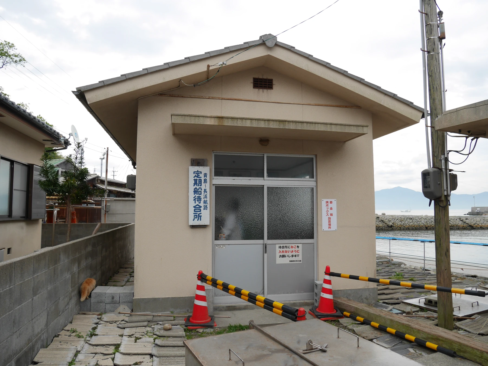
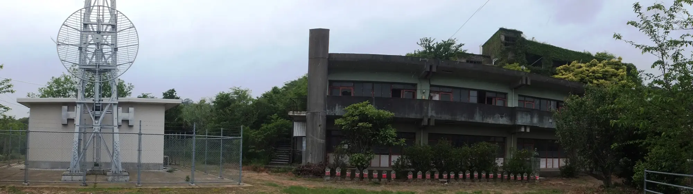
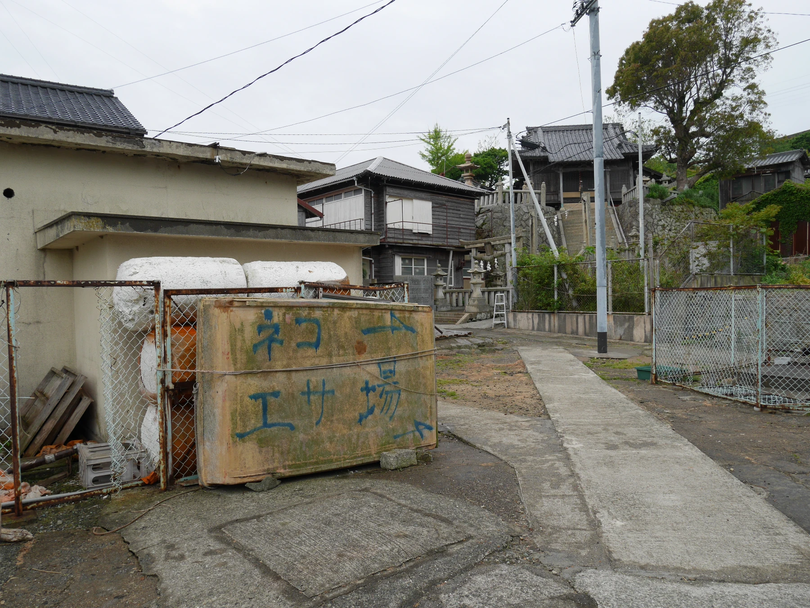
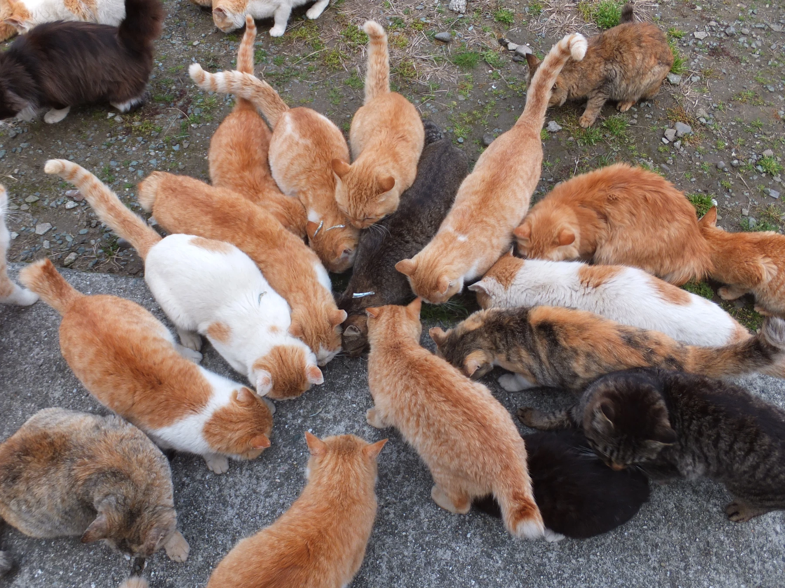

A cat lover's paradise, Aoshima is an island in Japan's Ehime prefecture. The island is
famous for the large quantity of semi-tame cats that inhabit the island. Perfect for a
short day trip, the island is only about half a square kilometre in size, and 1.6km long.
Stepping off the ferry onto the island,
resident cats approach to greet visitors
to the island and request attention and treats.
A 360 video beside the port on Aoshima.
The island contains many abandoned buildings and ruined homes to explore. Additionally, the
overgrown state of much of the area produces an almost eerily tranquil feeling. Coupled with
the many resident cats, usually seen basking in the sun or enjoying afternoon an nap, it
seems as though Aoshima is an island being reclaimed by natural forces.
Currently the feline residents outnumber the humans 20:1. Efforts to spay and neuter the
cats on the island to prevent further inbreeding has resulted in the cat population
decreasing in recent years, so this unique location is unlikely to survive for much
longer.
Google maps view of Aoshima.
Aoshima is accessible by a ferry that departs for Aoshima twice daily and only has one
return trip in the afternoon. The ferry departs from Port Nagahama, and will run you ¥1,360
for a round trip. A one way trip takes approximately 35 minutes. There are a limited amount
of seats on the ferry, so be sure to arrive early for the afternoon return ferry to ensure
you are able to leave the island. If you do get stuck on the island overnight, there is a
morning return ferry that departs Aoshima at 8:45AM. The ferry is cancelled in poor weather
conditions, so plan ahead to avoid any hiccups during your visit.
Port Nagahama is accessible by train, as Iyo-Nagahama Station is just 5 minutes walking
distance. Iyo-Nagahama Station is on the Yosan Line, which also stops in the nearby
Matsuyama city. Getting to Matsuyama is relatively easy, as the city has its own airport
and is well-connected by train and air to major Japanese cities like Nagoya, Osaka and
Tokyo.
A resident feeding the local cats by the port on Aoshima.
Where to Stay, What to Eat?

Aoshima port's waiting room, for ferry passengers.
Despite it's global popularity, Aoshima is not considered a tourist attraction. The island
has very few residents and no shops, restaurants or cafes. There are also no overnight
accommodations for tourists on Aoshima, so be sure to catch that final ferry at 4:15PM!
Bring your own food and beverages for a simple picnic or midday snack while exploring, and
be sure to bring any trash you make back with you.
While there are small hotels available in the port town Nagahama, most tourists would have
a better experience staying in a larger city like Matsuyama and taking an early afternoon
train to catch the 2:30PM ferry to Aoshima from Nagahama. Look for accommodations near
Mastuyama City Station to make catching transportation smooth during your trip.
What to do?

Aoshima's elementary school, now closed, operates as a community centre and temporary
accommodation for island visitors.
By
暇・カキコ
- Own work,
CC BY-SA 4.0, Link
Despite lacking the usual tourist amenities, Aoshima truly is a unique experience. That
isn't to say there isn't plenty to see on the island. The harbour of the island features a
gorgeous rocky beach, and the remaining traces of the community that once lived on the
island make for an interesting afternoon of exploring. The island has multiple small shinto
shrines, and a buddhist temple that tourists may visit. The eastern end of the island has a
small memorial for a seaplane accident, and the western end has the Aoshima lighthouse, a
scenic spot for adventurous visitors to enjoy. Of course, spending time with the resident
cats is the largest draw for visitors to the island, and visitors often bring their own toys
and cat food to befriend the island's cats. Be sure to respect the resident's rules and only
feed the cats at the designated feeding area by the island
community centre.

The designated feeding area on Aoshima, roughly translated "The place that feeds cats"
In Japanese folklore, cats are considered lucky and auspicious. Aoshima isn't the only cat
island amongst Japan's many islands, there's even a term for islands like Aoshima,
"nekojima" which means to "cat island".

Resident cats of Aoshima crowding around sardines given to them by a human resident of
Aoshima.
.webp)